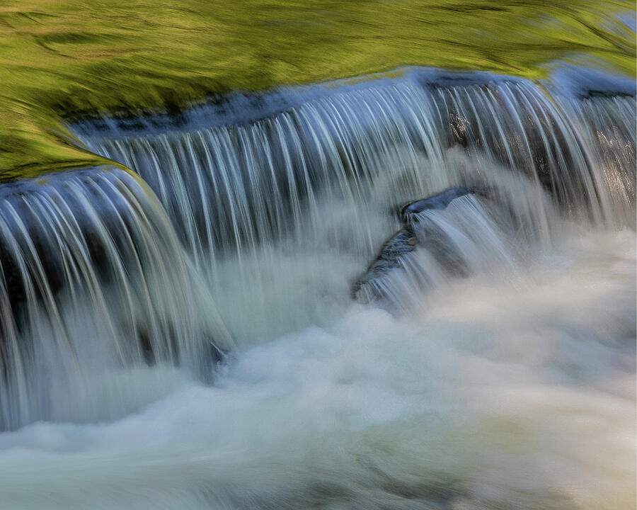
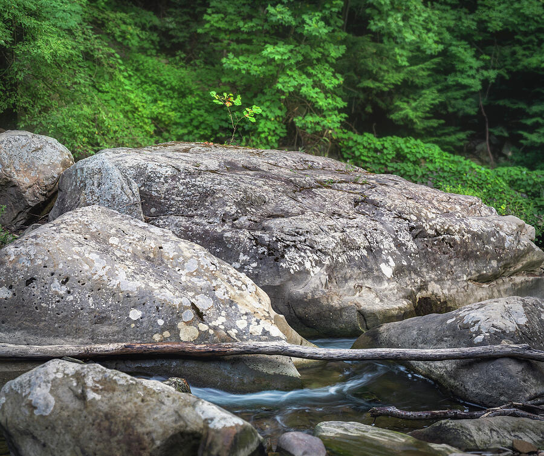
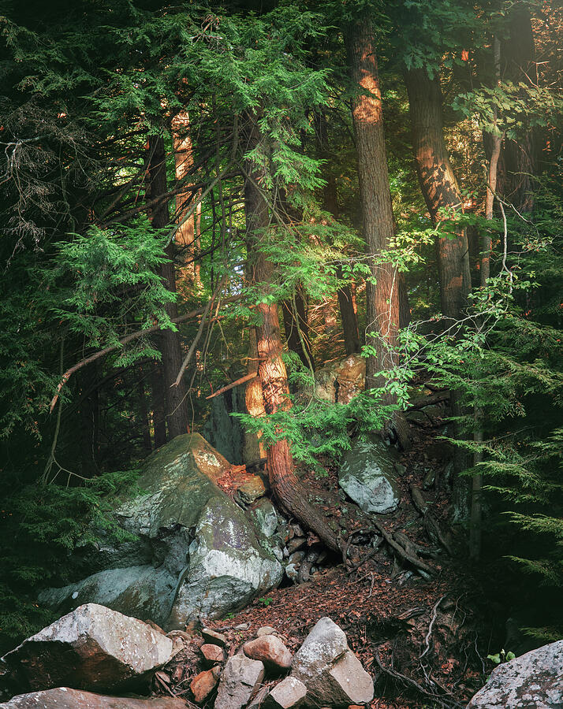
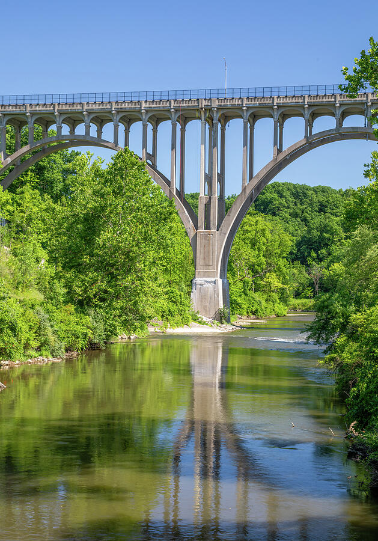
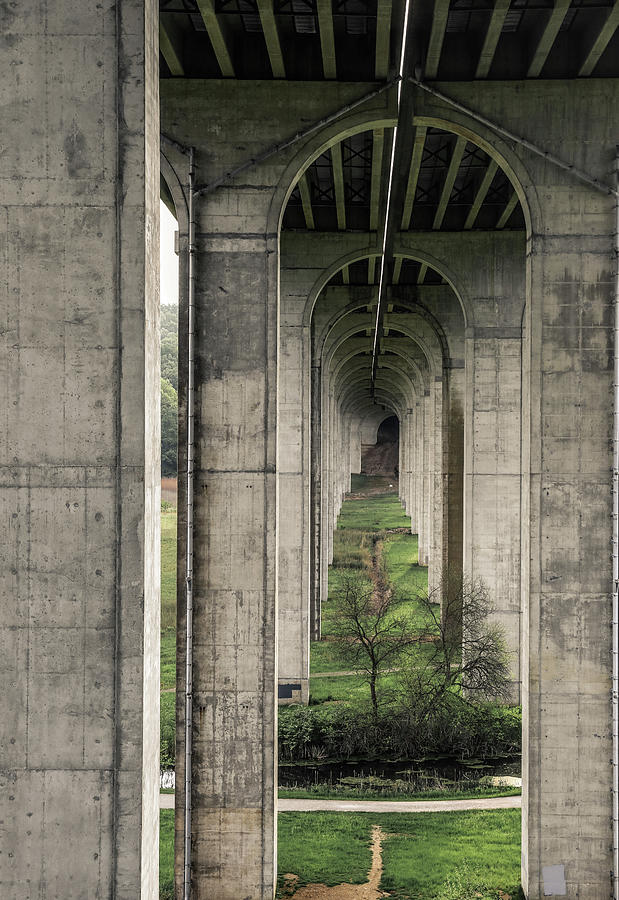
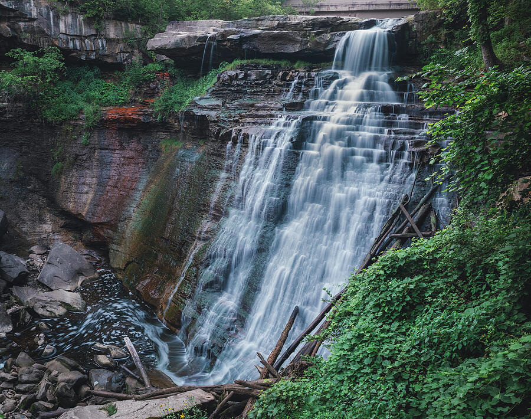

The character of the park
A national park built around details, not one enormous overlook.
Cuyahoga Valley National Park does not photograph like the open landscapes of the American West. Its strength is quieter and more layered. A trail can disappear into a bright opening. A stream can turn green from reflected leaves. A bridge can become a repeating pattern of concrete arches. Water can soften over rock ledges, then change character entirely after rain or during winter ice.
The photographs in this guide were made in Cuyahoga Valley and neighboring Northeast Ohio parklands. They also support my larger collection of Cuyahoga Valley National Park photography prints, where each finished image can be explored as framed art, canvas, acrylic, metal, and other available formats.
Rather than pretending every scene belongs to one single outing, the route below shows how I would structure a photography day using the kinds of light and subjects represented in this collection. It leaves room for weather, parking, water flow, changing trail conditions, and the possibility that a smaller scene will become more interesting than the famous destination you planned around.
Forest trails and directional light
Start where the canopy, trail, and eastern light can work together. The goal is not simply to photograph green trees. Look for separation between trunks, a path that creates depth, and a brighter opening that gives the eye a destination.
Chippewa Creek and smaller woodland scenes
Creek photography rewards slower observation. Work with repeated water edges, moss, exposed boulders, fallen branches, and small plants that might disappear in a wider composition. A polarizer can help control glare, but rotate it carefully so the water retains life.
Brandywine Falls
Use the boardwalk and official viewpoints rather than searching for risky angles. A vertical frame suits the stepped cascade, while leaves can become a natural border. Overcast conditions help control the large difference between bright water and dark rock.
Bridges, river reflections, and Ohio infrastructure
Historic and modern bridges are part of the visual identity of the valley. Photograph them as architecture, but also show how they interact with water, forest, open land, and the long corridor of the river.
Bedford Reservation waterfalls
Bridal Veil Falls and Great Falls of Tinker's Creek are not inside Cuyahoga Valley National Park. They are nearby Cleveland Metroparks destinations that extend the day into another part of Northeast Ohio's gorge and waterfall landscape.
Forest light
Wait for the path to become more than a path.
The sunlit forest trail became the natural opening image for this guide because it explains what Cuyahoga Valley does best. The scene is not built around a distant summit. It is built around depth: dark trees in the foreground, a receding path, layered foliage, and a bright opening that pulls the viewer forward.
Woodland photography can become visually crowded when every branch and leaf receives equal attention. I looked for a structure within the complexity. The path supplied the leading line. The bright canopy opening supplied the destination. The darker trees along the edges contained the frame.
When working with this kind of light, expose carefully around the brightest opening and review the histogram rather than relying only on the rear-screen preview. It is easier to lift controlled shadows than recover completely clipped sunlight.


Chippewa Creek
Use moving water as shape, not only as subject.
At Chippewa Creek, I did not need the entire landscape to explain the place. The repeated lip of the small falls, the reflected green surface, and the change from smooth water to white turbulence created a nearly abstract composition.
Long exposure does not have to mean removing every trace of water texture. The best shutter speed depends on the flow. Make several frames at different speeds. One exposure may show delicate strands, another may create broader ribbons, and a third may become too smooth to retain the energy that first caught your attention.
A polarizer is especially useful around wet foliage and shallow water, but maximum polarization is rarely the automatic answer. Rotate it while watching the viewfinder. Stop when glare is controlled without flattening the reflection or making the water feel lifeless.
Small discoveries
The most meaningful photograph may be measured in inches, not miles.
The resilient sapling above Chippewa Creek's pale boulders became a visual anchor because of its scale. The young leaves were delicate against the weight of the stone, and the creek continued moving below them.
This is the kind of scene that can disappear when a photographer is focused only on reaching a named overlook. Slow down around creek beds, rock fields, roots, and the edges of trails. Look for one small subject that gives the larger environment meaning.
The composition works because the sapling is isolated against a darker background while the boulders create a broad base beneath it. The fallen branch and moving water add horizontal movement without competing with the main subject.


Working with contrast
Let selective light create depth inside the forest.
In the Chippewa Creek forest, early light warmed only a few trunks while much of the surrounding evergreen growth remained in shadow. The contrast gave the scene depth, but it also created an exposure challenge.
When patchy light is the subject, do not automatically brighten every dark area. The shadow is what makes the illuminated trunks feel important. Keep enough detail to suggest the forest, then allow selected highlights to guide the eye.
Bracketing can be useful when the dynamic range becomes extreme, but it should not erase the reason you stopped. A technically even file can lose the atmosphere of a forest where light was brief and selective.
Brandywine Falls
Frame the waterfall without losing the rock beneath the water.
Brandywine Falls is one of the park's best-known locations, but the photograph still depends on decisions about timing, viewpoint, shutter speed, and what to include around the cascade.
I composed the vertical image so the summer leaves formed an active edge rather than becoming clutter. The longer exposure softened the falling water, while enough detail remained in the ledges to show the structure that gives the waterfall its stepped character.
Waterfall photography is often easier under cloud cover because highlights in the water and deep shadows along the gorge remain closer together. After rain, flow may become more dramatic, but spray, slippery surfaces, and strong contrast can also increase. Stay within official viewing areas and check current conditions before the visit.


Architecture and reflection
Let the river complete the bridge.
The Brecksville-Northfield Bridge is a strong architectural subject on its own, but the reflection extends the center pier and gives the vertical frame a second layer of symmetry.
I balanced the bridge with the surrounding green valley rather than isolating it as pure engineering. That relationship between human structure and the Cuyahoga landscape is central to the region's visual character.
For reflective scenes, small changes in position matter. Move until the reflected pier, arches, and river edges align. A polarizer can reduce glare, but be careful not to remove the reflection that makes the composition work.
Repetition beneath the Turnpike
Compression turns concrete arches into a long visual corridor.
The underside of the Ohio Turnpike bridge offered a very different interpretation of the valley. From the right position, the repeated concrete arches receded toward a distant opening, creating a tunnel-like rhythm through the landscape.
The strength of the photograph comes from alignment. The center seam, arch openings, overhead beams, and narrow path all lead toward the same vanishing area. A longer focal length or a carefully chosen distant position can compress repeated structures and make the pattern feel denser.
This is a reminder that a Cuyahoga Valley photography guide should not be limited to waterfalls and trees. Infrastructure is part of the story. Bridges reveal how transportation, industry, water, and forest occupy the same narrow corridor.

Favorite photography subjects
The places and visual ideas I would prioritize again.
These are not ranked only by fame. They represent the variety that makes the region worth photographing: light, water, intimate detail, architecture, and a nearby extension into Bedford Reservation.
Best early light
Directional sunlight, mist, and a receding path can turn dense woodland into a clear, inviting composition.
Signature waterfall
The stepped rock and vertical flow offer a recognizable scene that changes dramatically with water volume and season.
Best intimate landscapes
Small falls, moss, boulders, roots, and reflected foliage reward careful observation more than hurried coverage.
Best sense of place
Architecture becomes more specific to the valley when it is shown with the river, forest, and reflected structure.
Best repeating pattern
Concrete, compression, and symmetry produce a graphic image unlike the park's more familiar nature scenes.
Best nearby extension
Bridal Veil Falls, Great Falls, gorge views, and historic infrastructure can add a second chapter to the day.
Photography notes
What helps when the forest, water, weather, and parking all keep changing.
Tripod
Useful for waterfalls, shaded forest scenes, careful bridge alignment, and lower ISO when wind is manageable.
Polarizer
Controls glare on wet leaves, rocks, and water. Rotate it carefully so useful reflections remain.
Lens cloths
Waterfall spray, humidity, and light rain can soften a photograph before you notice the droplets.
RAW files
Forest light often mixes warm highlights, cool shade, and strong greens. RAW files preserve more flexibility.
Bracketing
Helpful when a bright canopy opening and deep forest shadows exceed the camera's comfortable range.
Shutter variety
Try several speeds around moving water rather than assuming the longest exposure will be the strongest.
Telephoto details
A longer lens can isolate trunks, leaves, rock patterns, distant arches, or sections of a waterfall.
Safe footing
Wet steps, roots, boardwalks, rocks, and steep trail sections deserve more attention than the next composition.
Best seasons and weather
The park changes more than the map suggests.
Spring brings stronger water flow, fresh leaves, wildflowers, mud, and quickly changing conditions. It can be ideal for waterfalls when the light is soft and the trails are safely passable.
Summer creates deep greens and a dense canopy. Early morning becomes especially important because midday forest light can be contrasty and parking at popular locations can fill quickly.
Autumn adds color but also crowds. Look beyond the most obvious overlook and use leaves as framing, reflected color, or small foreground subjects.
Winter exposes structure. Bare trees, ice, snow, rock layers, and simplified architecture can produce quieter images, but boardwalks and trails may close or become hazardous.
Overcast weather is often excellent for moving water and woodland detail. Broken clouds can produce the most dramatic forest light, but require patience and quick exposure changes.
Nearby Northeast Ohio extension
Bedford Reservation is a separate but natural second chapter.
Bridal Veil Falls and Great Falls of Tinker's Creek belong to Bedford Reservation, not Cuyahoga Valley National Park. I keep that distinction clear while including Bedford as an optional nearby extension for photographers who want another gorge-and-waterfall landscape in the same Northeast Ohio trip.

Forest Waterfall Study
A wider environmental composition that keeps the waterfall connected to rock, timber, and surrounding forest rather than isolating only the cascade.
View this photograph →Official Cleveland Metroparks
Bridal Veil Falls
Use the official scenic-overlook page for current visitor information before adding Bridal Veil Falls to the photography route.
Open official information →Official Cleveland Metroparks
Great Falls of Tinker's Creek
Check the official destination page for access and visitor details before photographing this powerful Bedford Reservation waterfall.
Open official information →Photographs from the valley
Forest, water, stone, bridges, and Northeast Ohio light.
Each photograph links to the finished print. Together they show why Cuyahoga Valley is more than one waterfall or one trail—it is a layered regional landscape shaped by nature and human history.
Sunlit Forest Trail
A bright opening and receding path through dense Ohio woodland.
View this print →
Brandywine Falls
Stepped water framed by summer green.
View this print →Bridge Reflection
Architecture extended through the river and surrounding green valley.
View this print →Flowing Water and Moss
An intimate creek composition built from repetition, motion, and reflected green.
View this print →Resilient Sapling
A small living subject above heavy stone and moving water.
View this print →Morning Forest Light
Selected trunks warmed by early light inside deep evergreen shade.
View this print →Turnpike Arches
Concrete repetition and a compressed architectural corridor through the valley.
View this print →Forest Waterfall Study
A wider composition showing water, ledges, timber, and the surrounding forest together.
View this print →Helpful planning links
Official resources to check before visiting or photographing the park.
Common questions
Questions about photographing Cuyahoga Valley.
What are the best photography locations in Cuyahoga Valley National Park?
Brandywine Falls, woodland trails, the Ledges area, river and bridge viewpoints, and smaller creek scenes all offer different possibilities. The strongest choice depends on the season, water flow, direction of light, crowd level, and how much time you can leave for unplanned stops.
When is the best time to photograph Brandywine Falls?
Early morning or later in the day can help with parking and softer light. Overcast weather often controls contrast, while recent rainfall can create stronger flow. Check current NPS conditions and remain inside designated viewing areas.
Is sunrise or sunset better?
Sunrise is especially useful for quieter trails, lower traffic, and directional forest light. Sunset can work at more open viewpoints, but much of the park is enclosed by hills and canopy. Scout the exact location rather than assuming the same light will reach every destination.
Do I need a tripod?
A tripod is useful for waterfalls, shaded forest scenes, and careful bridge compositions. It is not essential for every photograph. When light is stronger or a trail requires frequent movement, handheld work may be more practical.
What lenses work best?
A standard zoom covers most trails, bridges, and environmental landscapes. A wide-angle lens helps in tight forest and waterfall viewpoints, while a telephoto lens isolates trunks, distant architecture, rock patterns, and smaller landscape details.
Should I use a polarizer?
Yes, but deliberately. It can reduce glare on leaves, water, and wet stone, yet too much polarization may remove reflections or make parts of a wide scene look uneven.
Are Bridal Veil Falls and Great Falls inside the national park?
No. Both are in Bedford Reservation, part of Cleveland Metroparks. They are included here as a clearly labeled nearby Northeast Ohio extension.
How much time should photographers allow?
A focused day can cover several subjects, but two days provide more flexibility for weather, water flow, parking, trails, and changing light. A rushed checklist is less useful than spending meaningful time at fewer locations.
Is the park worth photographing in winter?
Yes. Bare trees reveal structure, ice changes the waterfalls, and snow can simplify the landscape. Check closures, icy boardwalks, trail conditions, and road access before visiting.
Where can I buy the photographs?
Each image in the gallery links to its individual print page. The broader Cuyahoga Valley collection also includes artwork guidance, room examples, and links to available print formats.
What stays with me
Ohio rewards photographers who are willing to look closely.
Cuyahoga Valley may not announce itself with one vast horizon, but that is part of its value. The strongest images often come from a narrow path, a reflected bridge pier, a small sapling above stone, a few trunks touched by light, or the repeating arches beneath a roadway.
The park and surrounding reservations encourage a slower kind of landscape photography. Weather matters. Water level matters. The angle of the canopy matters. So does the decision to stop walking and examine a scene that would be easy to pass.
That is the larger lesson of photographing Northeast Ohio: beauty is not absent because the landscape is familiar. Familiarity can become an advantage. It teaches you where light may return, how water changes after rain, and which ordinary places become extraordinary for only a few minutes.
Cuyahoga collection
Explore Cuyahoga Valley Photography Prints
View forest trails, waterfalls, bridges, field notes, interior examples, and direct print links.
Explore the collection →Ohio photography
Explore More Ohio Nature Artwork
Continue to landscapes, wildlife, waterfalls, forests, lakes, and regional scenes from across Ohio.
View Ohio photography →